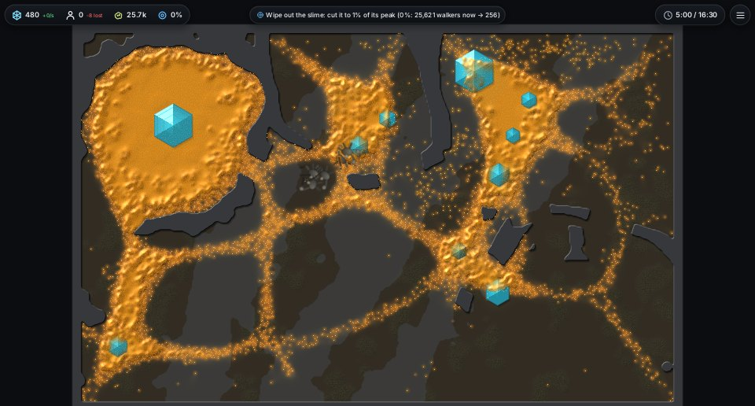
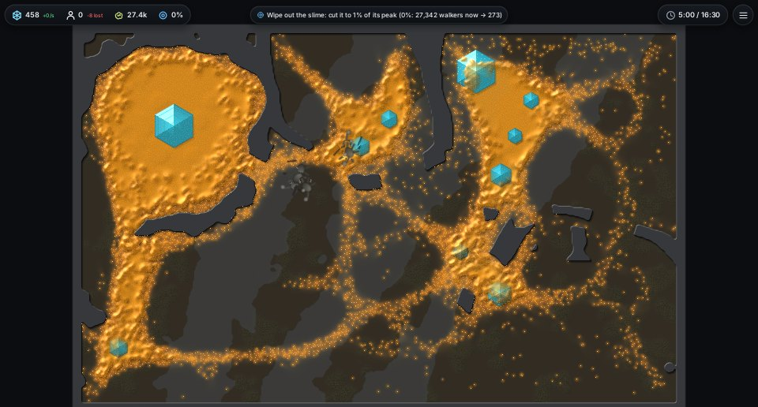

<title>Slime Specks</title>
<meta name="claude:viewport-fit-sides" content="cover">
<link rel="stylesheet" href="https://fonts.googleapis.com/css2?family=Bricolage+Grotesque:opsz,wght@12..96,600;12..96,750&family=Source+Sans+3:wght@400;600&family=JetBrains+Mono:wght@400&display=swap">
<style>
/* Layout: one reading column; clips and stills in pairs (one column on a phone), counts under each. The slime-enemy pages' look. */
:root{
  --bg:#f3f2ec; --panel:#e8e6dc; --fg:#1d211c; --muted:#5b6157;
  --accent:#b0702a; --soft:#f1e3cf; --line:#cfccbf;
  --display:"Bricolage Grotesque", "Segoe UI", system-ui, sans-serif;
  --body:"Source Sans 3", "Segoe UI", system-ui, sans-serif;
  --mono:"JetBrains Mono", ui-monospace, Consolas, monospace;
}
@media (prefers-color-scheme: dark){:root:not([data-theme="light"]){
  --bg:#16140f; --panel:#221f18; --fg:#ebe7dd; --muted:#a39d8e;
  --accent:#e0a35a; --soft:#33291b; --line:#3a3428; color-scheme:dark}}
:root[data-theme="dark"]{
  --bg:#16140f; --panel:#221f18; --fg:#ebe7dd; --muted:#a39d8e;
  --accent:#e0a35a; --soft:#33291b; --line:#3a3428; color-scheme:dark}
body{background:var(--bg);color:var(--fg);font:17px/1.55 var(--body);margin:0;
  padding-left:max(16px,env(safe-area-inset-left,0px));padding-right:max(16px,env(safe-area-inset-right,0px));padding-block:28px 64px}
main{max-width:1080px;margin:0 auto;display:flex;flex-direction:column;gap:30px}
h1,h2,h3{font-family:var(--display);text-wrap:balance;line-height:1.15;margin:0}
h1{font-size:2.3rem;font-weight:750}
h2{font-size:1.45rem;font-weight:750;border-top:2px solid var(--accent);padding-top:14px}
h3{font-size:1.08rem;font-weight:600}
p{margin:0}
section{display:flex;flex-direction:column;gap:14px}
.lede{color:var(--muted);font-size:1.02rem;max-width:760px}
.eyebrow{font:12px/1 var(--mono);letter-spacing:.08em;text-transform:uppercase;color:var(--accent)}
.prose{max-width:760px;display:flex;flex-direction:column;gap:12px}
code{font:0.86em var(--mono);background:var(--panel);padding:1px 4px;border-radius:3px}
.grid{display:grid;grid-template-columns:repeat(2,minmax(0,1fr));gap:16px}
@media (max-width:720px){.grid{grid-template-columns:minmax(0,1fr)}}
figure{margin:0;display:flex;flex-direction:column;gap:6px;min-width:0}
figure video,figure img{width:100%;height:auto;display:block;border-radius:6px;border:1px solid var(--line);background:#000}
figcaption{display:flex;flex-direction:column;gap:2px;font-size:.92rem;color:var(--muted)}
.name{font:600 1.05rem/1.2 var(--display);color:var(--fg)}
.counts{font:13px/1.45 var(--mono);color:var(--fg);font-variant-numeric:tabular-nums}
.wrap{overflow-x:auto;max-width:100%}
table{border-collapse:collapse;font-size:.92rem;font-variant-numeric:tabular-nums}
th,td{text-align:left;padding:6px 12px 6px 0;border-bottom:1px solid var(--line);vertical-align:top}
th{font-weight:600;color:var(--muted)}
.ask{background:var(--soft);border-radius:8px;padding:16px 18px;max-width:760px;display:flex;flex-direction:column;gap:8px}
footer{font-size:.85rem;color:var(--muted);max-width:760px}
</style>
<main>
<header style="display:flex;flex-direction:column;gap:10px">
  <span class="eyebrow">Larder World · the run's slime · 2026-11-16</span>
  <h1>The bronze is gone and the specks stay</h1>
  <p class="lede">You said "Remove the bronze, keep the specks". The slime no longer thickens or condenses anywhere in play, so there is no bronze. Instead, plain slime that is crowded or feeding at a crystal now and then sends a walker off to a fresh crystal far away. These specks run there, land and feed, and they come most often on the first planets.</p>
</header>

<section>
  <h2>Planet 1, the same game with and without specks</h2>
  <p class="prose">Run seed 1, planet 1, with the scripted squad holding where it lands and firing. This is the whole map, one frame a second for the first 4:00, played at 15 times the game's pace. Under each clip are the slime's walkers at 1:00, 2:00, 3:00 and 4:00, then the specks on their way at those times.</p>
  <div class="grid">
    <figure><video src="img/off.mp4" poster="img/off.jpg" autoplay muted loop playsinline controls aria-label="Planet 1 without specks"></video><figcaption><span class="name">Without specks</span><span class="counts">walkers 10,472 · 11,171 · 15,372 · 19,553<br>no specks</span></figcaption></figure>
    <figure><video src="img/on.mp4" poster="img/on.jpg" autoplay muted loop playsinline controls aria-label="Planet 1 with specks"></video><figcaption><span class="name">With specks (what the run plays now)</span><span class="counts">walkers 11,289 · 14,158 · 18,493 · 22,788<br>on their way 915 · 1,071 · 1,658 · 1,834</span></figcaption></figure>
  </div>
  <p class="prose">What to watch: by 1:30 a stream of specks joins the top body to the bottom one across the river, and a few head right toward the far crystals. By 3:00 a second stream runs down to the crystal on the right, where a new patch of slime grows. Without specks there is no stream at 1:30 and that crystal is still bare at 3:00.</p>
</section>

<section>
  <h2>Planet 2 at 5:00</h2>
  <p class="prose">Run seed 2, planet 2, the same hand. The squad is gone by 1:30 in both games, so this is the slime spreading on its own.</p>
  <div class="grid">
    <figure><figcaption><span class="name">Planet 2 at 5:00, without</span><span class="counts">25,716 walkers</span></figcaption></figure>
    <figure><figcaption><span class="name">Planet 2 at 5:00, with</span><span class="counts">27,428 walkers · 1,680 on their way</span></figcaption></figure>
  </div>
  <p class="prose">On planet 1 the slime is a solid sheet, so the specks show up clearly against the bare ground. On planet 2 the slime is a mesh of thin strands, and the specks look like its own exploring strands. In a close-up of one channel I could not tell the two games apart. If you can't see them on planet 2 either, the view could draw a walker on its way a little differently. That would come from the simulation (the walker's own state), so it would not be a painted effect.</p>
</section>

<section>
  <h2>How much they do</h2>
  <div class="wrap"><table>
    <tr><th>Planet</th><th>Walkers at 5:00, without → with</th><th>Specks on their way</th><th>Squad's last soldier</th></tr>
    <tr><td>1 (run seed 1)</td><td>23,900 → 26,239 (+10%)</td><td>about 700 to 1,100 in the first 2:00</td><td>3:00 → 1:45</td></tr>
    <tr><td>2 (run seed 2)</td><td>25,716 → 27,428 (+7%)</td><td>about 1,000 to 1,200 in the first 2:00</td><td>1:30 → 1:15</td></tr>
  </table></div>
  <p class="prose">That is one game per planet, so it shows the direction, not the size. The first version sent half of each chance, and 12,300 of 17,406 walkers were on their way at once at 1:00, most of the body. A speck now gives up after 20 seconds if it can't land, and only a twentieth of the chances go.</p>
  <div class="wrap"><table>
    <tr><th>Planets</th><th>1-2</th><th>3-4</th><th>5-6</th><th>7-8</th></tr>
    <tr><td>Share of chances taken, every 10 s</td><td>1 in 20</td><td>1 in 25</td><td>1 in 33</td><td>1 in 50</td></tr>
  </table></div>
</section>

<div class="ask">
  <h3>Two things for your playtest</h3>
  <p><b>Planet 1 now sends specks.</b> Breakaway used to start on planet 2. You said specks should be most common early, so planet 1 has the most. If the first planet should stay plain, that's one number to change.</p>
  <p><b>Thickening went with the bronze.</b> Thickening was how the slime got "stronger by holding onto its crystals": a fed slime with no room grew up to twice its size. Now the slime stops at its slots again. Specks win back some of that by reaching new crystals sooner, and the mini-bosses are the strength that grows deeper into the run. If you want held crystals to make the slime stronger again without the bronze, one option is a size cap that rises with the crystals it holds.</p>
</div>

<footer>Source and raw readouts: <code>Reports/specks-2026-11-16/</code> in the repository. Recorded headless on a software GPU; the clips are the same game the counts come from.</footer>
</main>
